Abusing Go, AWS Lambda and bloom filters to make a true Australian serverless search engine
Who are you?
"Officially" technical lead/principal at Kablamo but a "code monkey" at heart.
I blog boyter.org code free software github/boyter/ I run searchcode.com also on the x.com @boyter activitypub @boyter@honk.boyter.org
https://boyter.org/
Everything is there, so feel free to go to sleep

My hobby; search engines
early termination, syntax highlighting, matching, snippet extraction, rate limiting, index, bot detection, ranking, distributed algorithms, caching, tokenization, string searching, regular expressions, data structures, line detection, duplicate detection, literal extraction, unicode, case insensitive matching etc...
searchcode.com

Lambda/Serverless Weaknesses
- Persistance
- Performance
Never do at runtime what you can do at compile time.
The idea!
Compile the index INTO the lambda and deploy that
- 50 MB zipped binary
- 75 GB of space to store all your lambda's
- AWS Lambda 1,000,000 free requests per month
- AWS Lambda 400,000 seconds of compute time per month
Proving the theory
Brute Force
package main
func main() {
index := []string{
"Memcached vs Redis - More Different Than You Would Expect",
"You Don't Need a Library for File Walking in Go",
// ... 99,997 more ...
"Lessons Learnt Building for the Atlassian Marketplace",
}
for _, x := range index {
strings.Contains(x, "searchterm")
}
}
This does not work...
Several seconds per search...
Add an index
Structured list. Keys point at data so searches are faster.
Given a term, return id's which contain it.
Textbook 101 index
index = map[string][]int{
"serverless": []int{3,1337},
"days": []int{1,2,3,4,5,6,1337},
"brimful": []int{7,45},
"asha": []int{45},
}
not compressed, list walking can be slow
Add Complexity
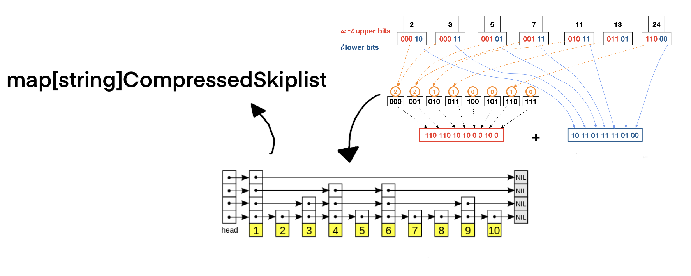My attempt
Two turkeys taped together does not make an eagle.
How about bloom filters?
A.K.A Bitsliced signatures
Bloom filter: Empty
16 boolean's in an array
Add
Hash the term 3 times and set the bits
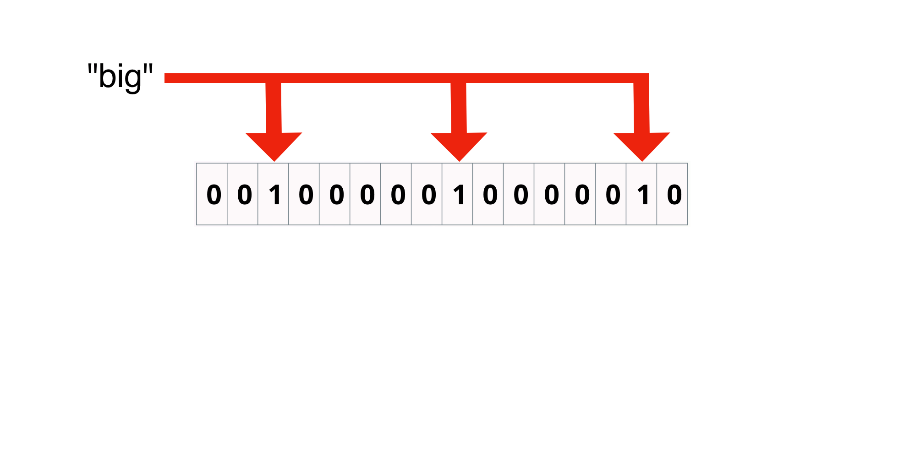Add second
3 more bits set
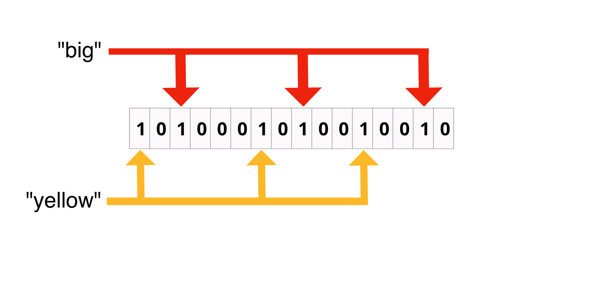Overlapping bits
"big" and "dog" share 2 bits
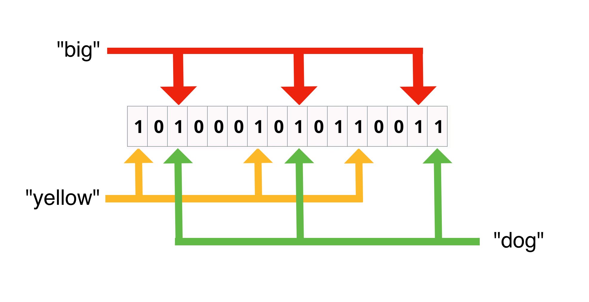Hit
hash "big" and check bits
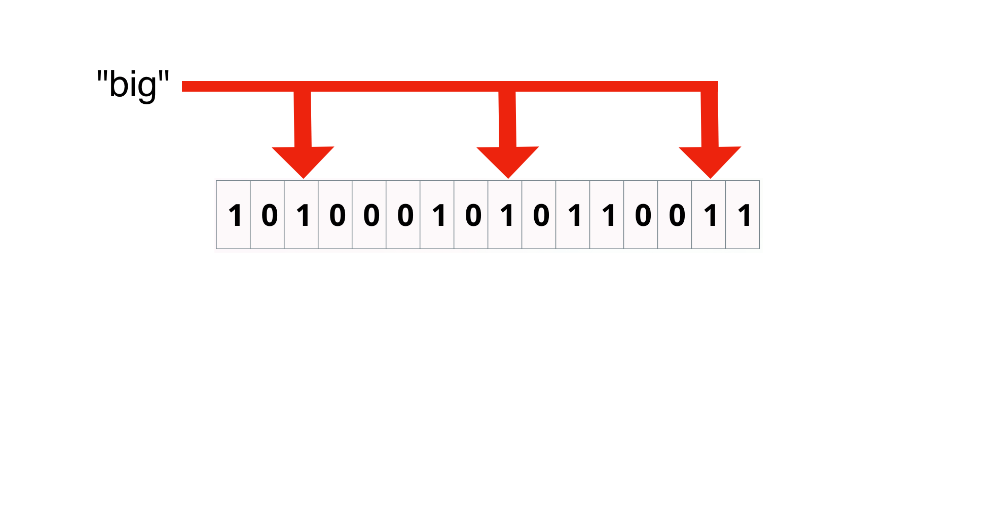Miss
one bit position is 0 so miss
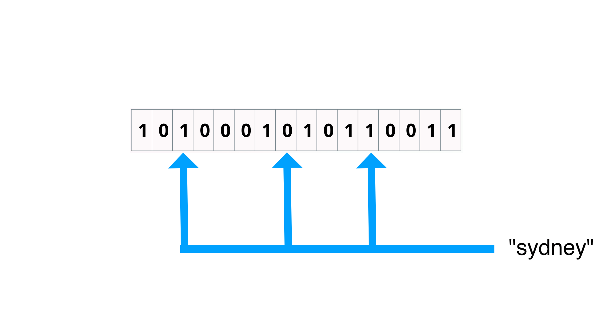False Positive
"big" and "yellow" supplied bits
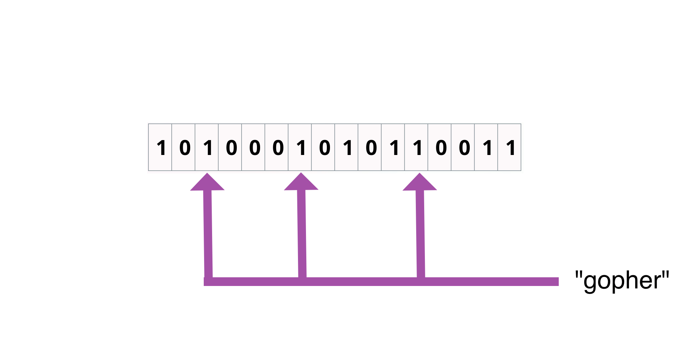Bloom filter: search
8 bit bloom filter
Check bit positions 1 and 7. Document 4 matches.
for each bloomfilter
for each bit
check if bit location in filter is set
if all matching bits are set
record possible matchAdvantages
- Compressed. Only using several bits per term!
- Just arrays of bools, easy to embed in code
Problem
8x overhead per bit because of how languages work...
Illustration
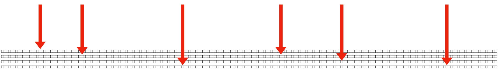Can we do better?
In theory; theory and practice are the same. In practice they arent.
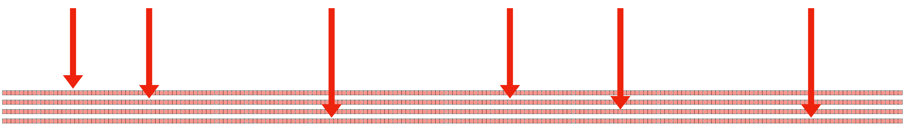Bitfunnel
Good enough for Dan Luu? Good enough for you.
Fixes
Rotate the filter. Documents now on columns not rows.
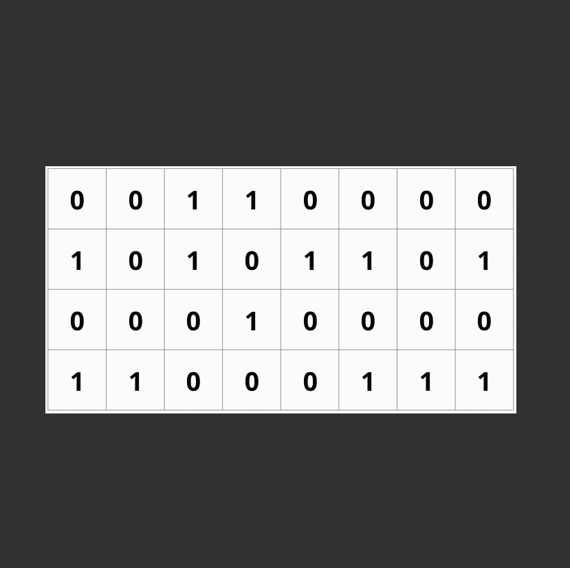Fetch row 1 and 7 same as previous example
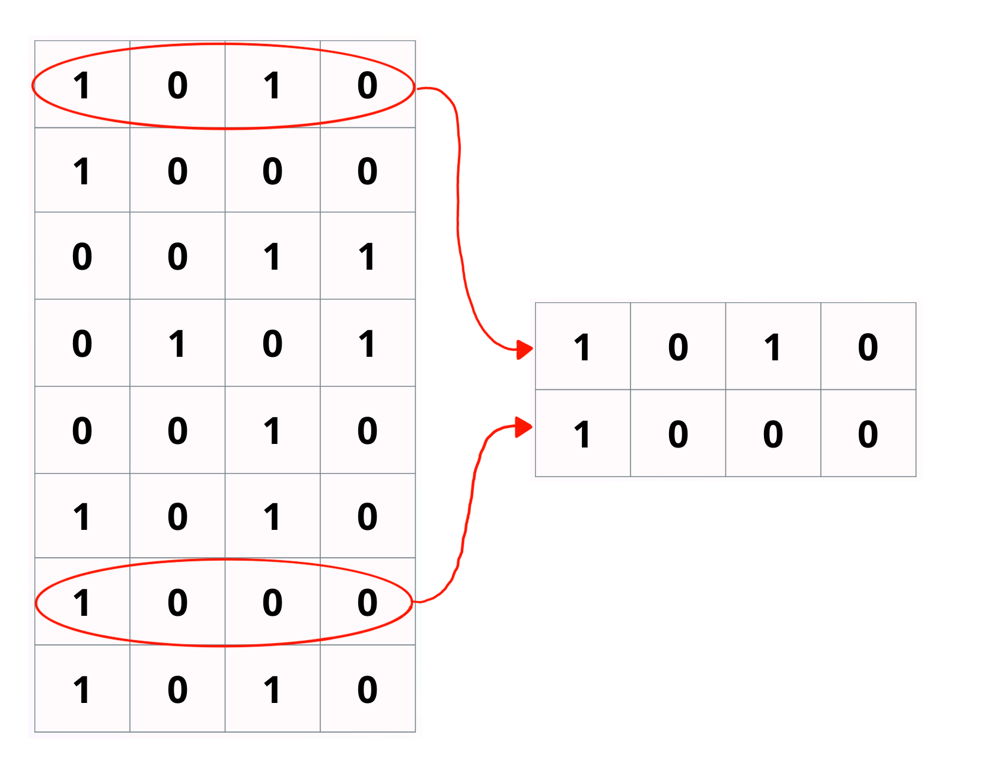Logically & all rows
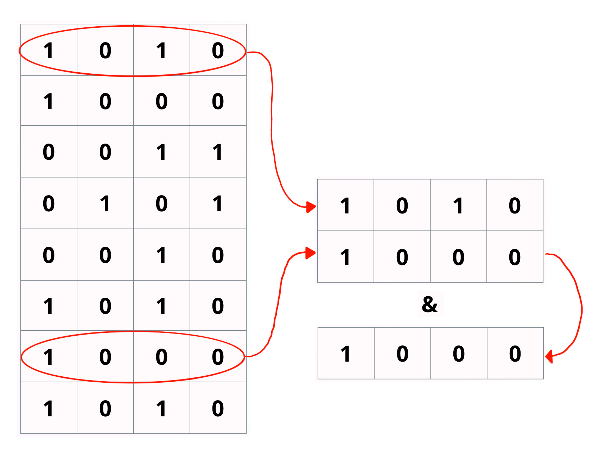Pos 1 is true, so document 4 matches
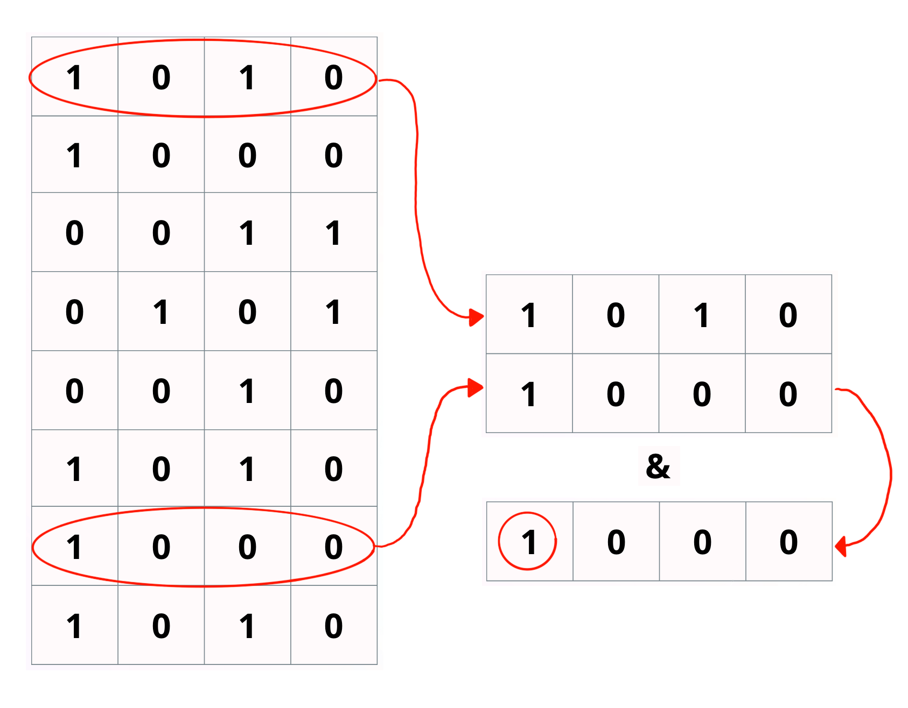Results?
This reduces the amount of RAM we need to access by a huge factor for larger bloom filters.
Example
64 bit ints to store the filter
16 bit bloom filter, with 32 documents added.
Filled right to left
0000000000000000000000000000000010100011111111111111111111111101
0000000000000000000000000000000001110000000000010000100000000000
0000000000000000000000000000000000000000000000000000000000000000
0000000000000000000000000000000000100011111100000000000000000000
0000000000000000000000000000000000100000000000000000000000000000
0000000000000000000000000000000011000000000000000000000000000000
0000000000000000000000000000000000000000000000000000000000000000
0000000000000000000000000000000000001000000000000001000000000000
0000000000000000000000000000000000111100000000000000000000000000
0000000000000000000000000000000000100001111100000001010101011110
0000000000000000000000000000000010000010000010001010101010100011
0000000000000000000000000000000001011000000000000000000000000000
0000000000000000000000000000000001101011111111111111111111111111
0000000000000000000000000000000000110000001000000001100000001000
0000000000000000000000000000000010100010000111111110101010100001
0000000000000000000000000000000001100011111100000000000000000000
Embed Code Example
Example filter.
50,000 * 2,048 = 102,400,000 ints
var bloomFilter = []uint64{1942, 1696, 1762, 496, 1776, 1954, 1970, 1536, 494, 134, 128, 1680, 0, 1536,
2016, 1952, 2047, 296, 1600, 1536, 0, 64, 1664, 1985, 2046, 2032, 1760, 1536, 416, 1536, 360, 1568, 256,
1920, 384, 0, 0, 1780, 1920, 1536, 256, 2032, 0, 1792, 1536, 1540, 1988, 0, 146, 1664, 2047, 288, 256, 1888,
256, 2011, 128, 1778, 1904, 354, 0, 200, 1952, 496, 1920, 403, 1687, 384, 128, 1600, 1664, 0, 1600, 1990, 1760,
1536, 256, 0, 0, 1664, 418, 1860, 1952, 256, 128, 162, 1736, 266, 64, 1922, 64, 1800, 0, 2003, 1920, 2016, 384,
// snip lots of integers here
1644, 1864, 1920, 64}
Searching
The core loop.
func Search(queryBits []uint64) []int {
var results []int
var res uint64
for i := 0; i < len(bloomFilter); i += 2048 {
res = bloomFilter[queryBits[0]+uint64(i)]
for j := 1; j < len(queryBits); j++ {
res = res & bloomFilter[queryBits[j]+uint64(i)]
if res == 0 { // important! skip shard if nothing!
break
}
}
if res != 0 {
for j := 0; j < 64; j++ {
if res&(1<<j) > 0 {
results = append(results, 64*(i/2048)+j)
}
}
}
}
return results
}
Searching: Visually
Perform & between each row, and if we see 0 skip to next block
~3 ms to run in lambda

Crawling
Lists of top domains exist, just download 3 or 4 and merge.
for y in listOfUrls:
get yOutput
[{
"url": "https://engineering.kablamo.com.au/",
"title": [
"Kablamo Engineering Blog"
],
"h1": [
"Lessons Learnt Building for the Atlassian Marketplace",
"What I Wish I Knew About CSS When Starting Out As A Frontender",
"How to model application flows in React with finite state machines and XState"
],
"h2h3": [
"Our Partners"
],
"h4h5h6": null,
"content": [
"THE BLOG",
"Insights from the Kablamo Team.",
"28.7.2021 - By Ben Boyter"
],
"rank": 0.65
}]
Query Ranking
Post query ranking + Pre ranking = happy user
// defaults for BM25 which provide a good level of damping
k1 := 1.2
b := 0.75
for word, wordCount := range res.matchWords {
freq := documentFrequencies[word]
tf := float64(wordCount) / words
idf := math.Log10(float64(corpusCount) / float64(freq))
step1 := idf * tf * (k1 + 1)
step2 := tf + k1*(1-b+(b*words/averageDocumentWords))
weight += step1 / step2
}
Snippet Extraction
https://github.com/boyter/cs/blob/master/snippet.go
features, noble mien, and the report which was in general circulation within five minutes after his entrance, of his having ten thousand a year. The gentlemen pronounced him to be a fine
it. Dear, dear Lizzy. A house in town! Every thing that is charming! Three daughters married! Ten thousand a year! Oh, Lord! What will become of me. I shall go distracted.”
Searching
Time to search
Problem solved.
2021-09-13T14:33:34.114+10:00 Duration: 142.89 ms Billed Duration: 143 ms
2021-09-13T14:34:26.427+10:00 Duration: 6.44 ms Billed Duration: 7 ms
2021-09-13T14:35:15.851+10:00 Duration: 3.40 ms Billed Duration: 4 ms
2021-09-13T14:35:28.738+10:00 Duration: 1.10 ms Billed Duration: 2 ms
2021-09-13T14:35:44.979+10:00 Duration: 6.11 ms Billed Duration: 7 ms
2021-09-13T14:36:15.089+10:00 Duration: 70.31 ms Billed Duration: 71 ms
Design
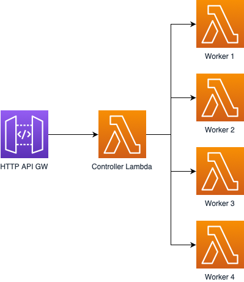Building Index
Iterate the crawled documents
sb.WriteString(fmt.Sprintf(`var averageDocumentLength float64 = %d`, averageDocumentLength))
sb.WriteString(`var documentFrequencies = map[string]uint32{`)
for k, v := range newFreq {
sb.WriteString(fmt.Sprintf("\"%s\": %d,", k, v))
}
sb.WriteString("}")
sb.WriteString("var bloomFilter = []uint64{")
for _, v := range bloom {
sb.WriteString(fmt.Sprintf("%d,", v))
}
sb.WriteString("}")
_, _ = file.WriteString(fmt.Sprintf(`{Url:"%s",Title:"%s",Content:"%s",Score:%.4f},`,
res.Url,
res.Title,
res.Content,
res.Score))
Write out to content.go.1 content.go.2 etc...
Deployment
for i in {1..1000}
do
cp ./content.go."$i" ./content.go
GOOS=linux GOARCH=amd64 go build -ldflags="-s -w" -o main &&
zip main.zip main &&
aws lambda create-function --function-name t"$i" --runtime go1.x --zip-file fileb://main.zip \
--handler main --timeout 10 --memory-size 1024 \
--role arn:aws:iam::000000000000:role/aws-lambda-search-LambdaServiceRole-1NOLIFEIFREAD
done
aws lambda update-function-configuration --function-name aws-lambda-search-controller \
--environment '{"Variables": {"WORKERS": "t0,t1,t2,t3,t4,t5,t6,t7,t8,t9,t10,t11,t12,t13,t14,t15,t16,t17,t18,t19,t20,t21,t22,t23,t24,t25,t26,t27,t28,t29,t30,t31,t32,t33,t34,t35,t36,t37,t38,t39,t40,t41,t42,t43,t44,t45,t46,t47,t48,t49,t50,t51,t52,t53,t54,t55,t56,t57,t58,t59,t60,t61,t62,t63,t64,t65,t66,t67,t68,t69,t70,t71,t72,t73,t74,t75,t76,t77,t78,t79,t80,t81,t82,t83,t84,t85,t86,t87,t88,t89,t90,t91,t92,t93,t94,t95,t96,t97,t98,t99,t100,t101,t102,t103,t104,t105,t106,t107,t108,t109,t110,t111,t112,t113,t114,t115,t116,t117,t118,t119,t120,t121,t122,t123,t124,t125,t126,t127,t128,t129,t130,t131,t132,t133,t134,t135,t136,t137,t138,t139,t140,t141,t142,t143,t144,t145,t146,t147,t148,t149,t150,t151,t152,t153,t154,t155,t156,t157,t158,t159,t160,t161,t162,t163,t164,t165,t166,t167,t168,t169,t170,t171,t172,t173,t174,t175,t176,t177,t178,t179,t180,t181,t182,t183,t184,t185,t186,t187,t188,t189,t190,t191,t192,t193,t194,t195,t196,t197,t198,t199,t200,t201,t202,t203,t204,t205,t206,t207,t208,t209,t210,t211,t212,t213,t214,t215,t216,t217,t218,t219,t220,t221,t222,t223,t224,t225,t226,t227,t228,t229,t230,t231,t232,t233,t234,t235,t236,t237,t238,t239,t240,t241,t242,t243,t244,t245,t246,t247,t248,t249,t250,t251,t252,t253,t254,t255,t256,t257,t258,t259,t260,t261,t262,t263,t264,t265,t266,t267,t268,t269,t270,t271,t272,t273,t274,t275,t276,t277,t278,t279,t280,t281,t282,t283,t284,t285,t286,t287,t288,t289,t290,t291,t292,t293,t294,t295,t296,t297,t298,t299,t300,t301,t302,t303,t304,t305,t306,t307,t308,t309,t310,t311,t312,t313,t314,t315,t316,t317,t318,t319,t320,t321,t322,t323,t324,t325,t326,t327,t328,t329,t330,t331,t332,t333,t334,t335,t336,t337,t338,t339,t340,t341,t342,t343,t344,t345,t346,t347,t348,t349,t350,t351,t352,t353,t354,t355,t356,t357,t358,t359,t360,t361,t362,t363,t364,t365,t366,t367,t368,t369,t370,t371,t372,t373,t374,t375,t376,t377,t378,t379,t380,t381,t382,t383,t384,t385,t386,t387,t388,t389,t390,t391,t392,t393,t394,t395,t396,t397,t398,t399,t400,t401,t402,t403,t404,t405,t406,t407,t408,t409,t410,t411,t412,t413,t414,t415,t416,t417,t418,t419,t420,t421,t422,t423,t424,t425,t426,t427,t428,t429,t430,t431,t432,t433,t434,t435,t436,t437,t438,t439,t440,t441,t442,t443,t444,t445,t446,t447,t448,t449,t450,t451,t452,t453,t454,t455,t456,t457,t458,t459,t460,t461,t462,t463,t464,t465,t466,t467,t468,t469,t470,t471,t472,t473,t474,t475,t476,t477,t478,t479,t480,t481,t482,t483,t484,t485,t486,t487,t488,t489,t490,t491,t492,t493,t494,t495,t496,t497,t498,t499,t500,t501,t502,t503,t504,t505,t506,t507,t508,t509,t510,t511,t512,t513,t514,t515,t516,t517,t518,t519,t520,t521,t522,t523,t524,t525,t526,t527,t528,t529,t530,t531,t532,t533,t534,t535,t536,t537,t538,t539,t540,t541,t542,t543,t544,t545,t546,t547,t548,t549,t550,t551,t552,t553,t554,t555,t556,t557,t558,t559,t560,t561,t562,t563,t564,t565,t566,t567,t568,t569,t570,t571,t572,t573,t574,t575,t576,t577,t578,t579,t580,t581,t582,t583,t584,t585,t586,t587,t588,t589,t590,t591,t592,t593,t594,t595,t596,t597,t598,t599,t600,t601,t602,t603,t604,t605,t606,t607,t608,t609,t610,t611,t612,t613,t614,t615,t616,t617,t618,t619,t620,t621,t622,t623,t624,t625,t626,t627,t628,t629,t630,t631,t632,t633,t634,t635,t636,t637,t638,t639,t640,t641,t642,t643,t644,t645,t646,t647,t648,t649,t650,t651,t652,t653,t654,t655,t656,t657,t658,t659,t660,t661,t662,t663,t664,t665,t666,t667,t668,t669,t670,t671,t672,t673,t674,t675,t676,t677,t678,t679,t680,t681,t682,t683,t684,t685,t686,t687,t688,t689,t690,t691,t692,t693,t694,t695,t696,t697,t698,t699,t700,t701,t702,t703,t704,t705,t706,t707,t708,t709,t710,t711,t712,t713,t714,t715,t716,t717,t718,t719,t720,t721,t722,t723,t724,t725,t726,t727,t728,t729,t730,t731,t732,t733,t734,t735,t736,t737,t738,t739,t740,t741,t742,t743,t744,t745,t746,t747,t748,t749,t750,t751,t752,t753,t754,t755,t756,t757,t758,t759,t760,t761,t762,t763,t764,t765,t766,t767,t768,t769,t770,t771,t772,t773,t774,t775,t776,t777,t778,t779,t780,t781,t782,t783,t784,t785,t786,t787,t788,t789,t790,t791,t792,t793,t794,t795,t796,t797,t798,t799,t800"}}'
Results...
- ~50 million documents indexed
- ~1000 lambda functions
- 23.6 GB (31% of 75 GB) FREE STORAGE!!!!
- In fact the whole thing is FREE if not being called!
- TRUE SERVERLESS SEARCH!
bonzamate.com.au
What is the sound of 1000 lambdas searching themselves?
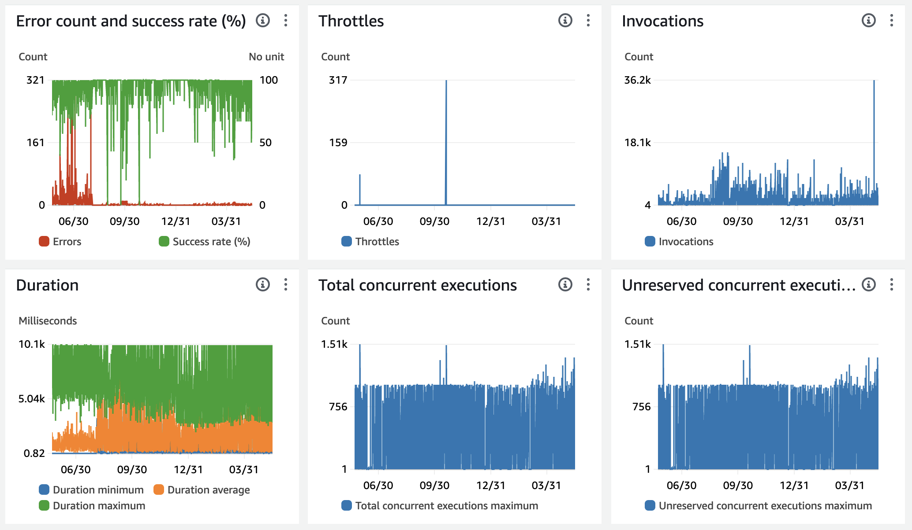Conclusions
Go. I doubt I could have done it in another language.
Bloom filters are great!
AWS is ripe for abuse like this
AMD64 vs ARM64
Conclusions
- Lambda layers... pointless for this, CPU weak
- Its... probably not a good idea at this scale
- Probably a really good idea for static websites?
A minimal version of the bloom filter index is available for you to play with https://github.com/boyter/indexer